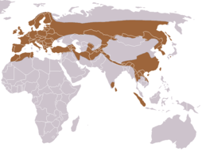

Az európai vidra (Lutra lutra) egy a ragadozó emlősök családjába tartozó faj, amely az egész Európában és Ázsiában is előfordul, a tengerpartoktól kezdve a folyókon, tavakon át a mocsaras területekig. Különböző édesvízi élőhelyeken található meg, de kifejezetten a tiszta, szennyezésmentes vizek kedvelője.
Az európai vidra az egész kontinensen előfordul, de az élőhelyek szűkülése és a vízszennyezés miatt egyes területeken ritkává vált. A faj védettséget élvez sok országban, és számos természetvédelmi intézkedés segíti a populációk fenntartását.
A vidra állományát több tényező is veszélyezteti, mint például a vizek szennyezése, élőhelyek elvesztése és a vadászat. Bár az európai vidra nem szerepel a kritikus veszélyeztetett fajok listáján, az állomány egyes területeken csökkenő tendenciát mutat.
Sok országban, különösen Európában, sikerült jelentős védelmet biztosítani a vidrák számára, így a faj állománya több helyen is növekvő tendenciát mutat.